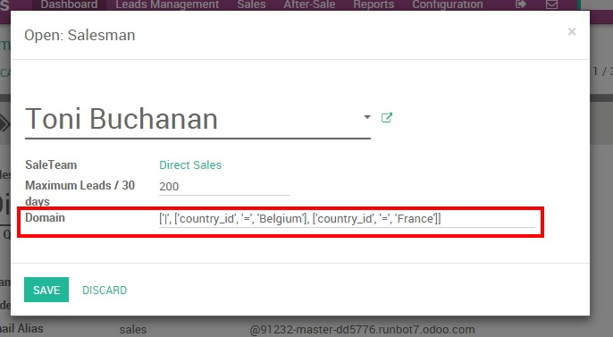

Depending on your business workflow and needs, you may need to dispatch your incoming leads to different sales team or even to specific salespeople. Here are a few example:
- Your company has several offices based on different geographical regions. You will want to assign leads based on the region;
- One of your sales teams is dedicated to treat opportunities from large companies while another one is specialized for SMEs. You will want to assign leads based on the company size;
- One of your sales representatives is the only one to speak foreign languages while the rest of the team speaks English only. Therefore you will want to assign to that person all the leads from non-native English-speaking countries.
As you can imagine, manually assigning new leads to specific individuals can be tedious and time consuming - especially if your company generates a high volume of leads every day. Fortunately, Odoo CRM allows you to automate the process of lead assignation based on specific criteria such as location, interests, company size, etc. With specific workflows and precise rules, you will be able to distribute all your opportunities automatically to the right sales teams and/or salesman.
Configuration
If you have just started with Odoo CRM and haven't set up your sales team nor registered your salespeople, read this documentation first.
Define rules for a sales team
From the sales module, go to your dashboard and click on the More button of the desired sales team, then on Settings. If you don't have any sales team yet, you need to create one first.

On your sales team menu, use in the Domain field a specific domain rule (for technical details on the domain refer on the Building a Module tutorial or Syntax reference guide) which will allow only the leads matching the team domain.
For example, if you want your Direct Sales team to only receive leads coming from United States and Canada, your domain will be as following :
[[country_id, 'in', ['United States', 'Canada']]]
Note
you can also base your automatic assignment on the score attributed to your leads. For example, we can imagine that you want all the leads with a score under 100 to be assigned to a sales team trained for lighter projects and the leads over 100 to a more experienced sales team. Read more on how to score leads here.
Define rules for a salesperson
You can go one step further in your assignment rules and decide to assign leads within a sales team to a specific salesperson. For example, if I want Toni Buchanan from the Direct Sales team to receive only leads coming from Canada, I can create a rule that will automatically assign him leads from that country.
Still from the sales team menu (see here above), click on the salesperson of your choice under the assignment submenu. Then, enter your rule in the Domain field.
Note
In Odoo, a lead is always assigned to a sales team before to be assigned to a salesperson. Therefore, you need to make sure that the assignment rule of your salesperson is a child of the assignment rule of the sales team.